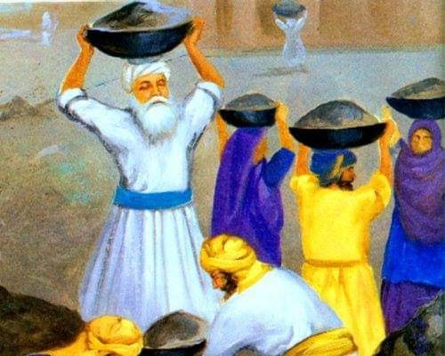

Guru Ram Das Ji's Sacred Mission

Guru Ram Das Ji, the fourth Sikh Guru, had a divine vision – to establish a place of spiritual peace and equality for all. He chose a serene location filled with water and greenery, where Amrit Sarovar (the Pool of Nectar) would be built.
In 1577, Guru Ji himself started digging the sarovar with the help of devoted Sikhs. Everyone joined with shovels and baskets, chanting Waheguru’s name, turning labor into devotion.
Guru Ram Das Ji showed that no task is too small when done in humility. Rich or poor, all helped equally in digging the holy pool. This reflected the Sikh principles of **seva** (selfless service) and **equality**.
As the sarovar was completed, it became a place of healing, peace, and community. The city that grew around it was called **Amritsar** – the city of nectar. Later, Guru Arjan Dev Ji built the **Harmandir Sahib (Golden Temple)** in the middle of the Sarovar.
“The foundation of faith is built with humility, service, and collective spirit.”